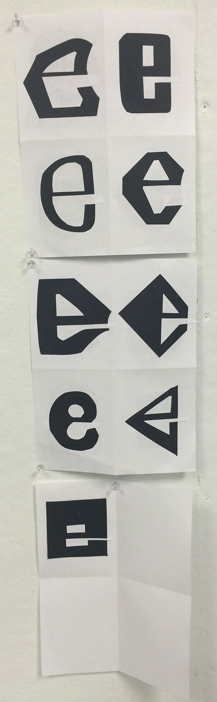
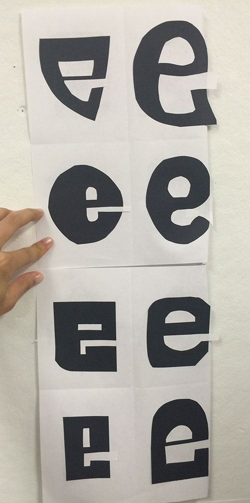
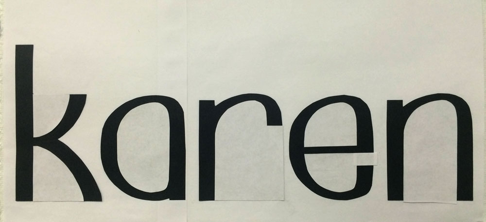

<!doctype html>
<html class="no-js" lang="">
    <head>
        <meta charset="utf-8">
        <meta http-equiv="x-ua-compatible" content="ie=edge">
        <title>Karen Ye</title>
        <meta name="description" content="">
        <meta name="viewport" content="width=device-width, initial-scale=1">

        <link rel="../apple-touch-icon" href="../apple-touch-icon.png">
        <!-- Place favicon.ico in the root directory -->

        <link rel="stylesheet" href="css/normalize.css">
        <link rel="stylesheet" href="css/main.css">
        <script src="../js/vendor/modernizr-2.8.3.min.js"></script>

    </head>
    <body>
        <!--[if lt IE 8]>
            <p class="browserupgrade">You are using an <strong>outdated</strong> browser. Please <a href="http://browsehappy.com/">upgrade your browser</a> to improve your experience.</p>
        <![endif]-->
        <div class="big">
            <div class="dash">

            </div>
            <a href="http://www.youtube.com/watch?v=nHc288IPFzk">
                <div class="dash">
                    
                </div>
            </a>
            <div class="dash">

            </div>
            <div class="dash">

            </div>
            <div class="dash">

            </div>
            <div class="dash">

            </div>
             

        </div>

        <!-- Add your site or application content here -->
<!--         <p>Hello! My name is Karen and I like cats. And sometimes screaming ducks.</p>
        <a href="http://mmcdermott18.github.io/ill2015/">Back to main</a>
        <br>
        <div class="img">
            <a href="http://www.behance.net/karenye"></a>
            <a href="http://www.youtube.com/watch?v=N2rQaWiQI5k"></a>
        </div>
         -->
        
        <script src="https://ajax.googleapis.com/ajax/libs/jquery/1.11.3/jquery.min.js"></script>
        <script>window.jQuery || document.write('<script src="../js/vendor/jquery-1.11.3.min.js"><\/script>')</script>
        <script src="../js/plugins.js"></script>
        <script src="../js/main.js"></script>


        </script>
    </body>
</html>
